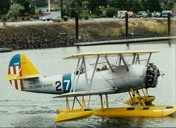
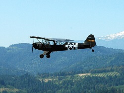
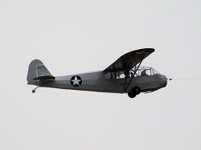
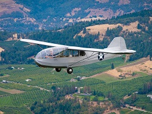
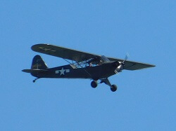

1916 Sopwith Scout "Pup"

Year: 1916
Acquired with funds from Bryan Reid, Sr with thanks to Larry Howard.
Engine: Le Rhone, 80 HP
The Sopwith Pup (officially “Scout”) got the “Pup” nickname from its small size compared to its predecessor, the Sopwith “1-1/2 Strutter.” It was a light, maneuverable and capable single seat fighter armed with a Vickers machine gun that was synchronized to shoot through the propeller disk. On August 2, 1916, a Pup was the first aircraft to land aboard a moving ship. By December 1917 aviation had advanced so much that the Pup was replaced, rendered obsolete for combat by more modern fighters like the Sopwith Camel and the Royal Aircraft Factory S.E.5. It continued in service behind the lines, for training, and Home Defense. This is WAAAM’s first aircraft powered by a rotary engine.
Additional Specifications:
Cruise: 85 MPH
Top Speed: 112 MPH
Empty Weight: 787 lbs
Gross Weight: 1225 lbs
Wing Span: 26'6"
Length: 19'4"
Height: 9'5"
Service Ceiling: 17,500'
Climb in 1 Minute: 750' at sea level
Approximate Number Built: 1770
1917 Curtiss JN-4D

Year: 1917
Donation: Terry Brandt
Engine: Curtiss OX-5, 90 HP
Designed by Glenn Curtiss and B. Douglas Thomas, the Curtiss JN-4D “Jenny” was the trainer of choice in both the US and England during World War I. Over 9,000 Jennys (including 2,700 JN-4D) were built by six companies and it’s estimated that 95% of American and British WWI pilots received training in the Jenny. One version of the Jenny was used by General Pershing in 1916 to pursue Pancho Villa after he’d attacked the U.S. 13th Cavalry at Camp Furlong, New Mexico. When WWI ended the Curtiss Airplane Company bought back large numbers of Jennys, refurbished them and resold them in the civilian market. Many pilots used their Army training to introduce America to flight by “barnstorming” or flying from town to town to show off with acrobatics and wingwalking and to sell rides. The first scheduled air mail flights in the USA in 1918 used Jennys.
Additional Specifications:
Cruise: 60 MPH
Top Speed: 75 MPH
Empty Weight: 1430 lbs
Gross Weight: 1920 lbs
Wing Span: 43'7.75"
Length: 27'4"
Height: 9'10.5"
Service Ceiling: 6,500'
Climb in 1 Minute: 200' at sea level
Approximate Number Built: 2,700+
Read more about WAAAM's Jenny here.
1933 Stearman Model 70

Donation: Terry Brandt
Engine: Lycoming R-680, 215 HP
This one-and-only airplane is the prototype of the Stearman Model 75 “Kaydet” biplane, an icon of aviation. The Model 70 was a blend of the Boeing 203 and the Stearman Model 6 Cloudboy and took just 60 days from idea to first flight. The Model 70 design was so refined that the Army considered its stall too gentle for a military trainer so the upper wing was modified for the desired performance and the change applied to all production Kaydets. Over 10,000 Kaydets (Navy N2S, Army PT-13, -17, -18, RCAF PT-27) were built.
Additional Specifications:
Cruise: 103 MPH
Top Speed: 124 MPH
Empty Weight: 1997 lbs
Gross Weight: 2686 lbs
Wing Span: 32'2" / 31'2"
Length: 24'10"
Height: 9'4"
Service Ceiling: 13,200'
Climb in 1 Minute: 825' at sea level
Approximate Number Built: 1
(Data pulled from Joseph Juptner's U.S. Civil Aircraft series.)
1935 Franklin PS-2 Glider

Acquired with funds from Don Mayo.
The Franklin PS-2 glider first flew in 1931. It was designed by R.E. Franklin, a Professor of Mechanical Engineering at University of Michigan who built it as an improvement over the German designs then in use. The wing is braced with struts rather than with multiple wires as was then common practice. Assembly and disassembly is much easier with struts than with wires. In 1933 Stan Smith won the National Soaring Championship in a Franklin PS-2. In 1934 three PS-2s were used in a trial of the Lustig Skytrain, a multi-glider towing arrangement intended for delivery of goods and mail. Departing New York, the three gliders were towed in a line then released in sequence over their respective destinations of Philadelphia, Baltimore and Washington, D.C. Also in 1934, the U.S. Navy procured six PS-2s for training though these saw little use. WAAAM's PS-2 is sporting the Navy PS-2 colors. In 1938 one of the Navy PS-2s was transferred to NACA (forerunner of NASA) where it was used for ground effect research by towing a PS-2 behind a specially designed automobile. The WAAAM PS-2 was owned and flown by the University of Michigan Glider Club until 1943.
Additional Specifications:
Glide Ration: 15:1
Empty Weight: 220 lbs
Gross Weight: 400 lbs
Wing Span: 36'
Length: 17'6"
Height: 6'10"
Approximate Number Built: 54
1940 Fairchild UC-86
Acquired with funds from Founding Memberships.
Engine: Ranger 6-440, 175 HP
This is a military version of the Fairchild 24R40. A sturdily-built airplane, the 24 adapted several automotive features including its brakes and roll-down windows. Initially built with just two seats, the third was added in 1933 and the fourth in 1938. This airplane was one of nine Fairchild 24R40's impressed into service by the Army as the UC-86 at the onset of WWII. A total of 2,232 Model 24's were built.
Additional Specifications:
Cruise: 125 MPH
Top Speed: 140 MPH
Empty Weight: 1561 lbs
Gross Weight: 2550 lbs
Wing Span: 36'4"
Length: 24'10"
Height: 7'3"
Service Ceiling: 17,000'
Climb in 1 Minute: 800' at sea level
Approximate Number Built: 34
(Data pulled from Joseph Juptner's U.S. Civil Aircraft series.)
1940 Naval Aircraft Factory N3N-3

Donation: John Cheney
Engine: Wright J-6-7, 235 HP
The last operational biplane in the U.S. armed forces, the N3N was also the last mass-produced aircraft from the Naval Aircraft Factory. As a yellow-painted primary trainer it was nicknamed the “Yellow Peril” by trainees. Engine starting was by use of a hand crank that spun up a flywheel. When the flywheel was up to the proper speed a handle was pulled to engage the flywheel with the engine. The N3N-3 was flown with either wheels or floats. Four were transferred to the U.S. Coast Guard in 1941 and after WWII the Naval Academy kept several N3N’s on floats. The last one was struck from the inventory in 1960.
Additional Specifications:
Cruise: 100 MPH
Top Speed: 125 MPH
Empty Weight: 2253 lbs
Gross Weight: 2880 lbs
Wing Span: 34'
Length: 25'3.5"
Height: 12'7"
Service Ceiling: 15,200'
Climb in 1 Minute: 900' at sea level
Approximate Number Built: 816
1941 Aeronca 65-TAL Defender
Donation: Judy Newman
Engine: Lycoming O-145, 65 HP
The Aeronca Tandem was designed specifically for WWII's Civilian Pilot Training Program. Aeronca had offered the Chief model for that program but the Army refused it because of its side-by-side seats. Aeronca quickly designed the Tandem as a brand new airplane, although it was clearly an Aeronca. Its most notable design innovation was positioning the rear seat five inches higher than the front for better visibility. When the U.S.A. joined the war the Tandem was renamed the Defender. This airplane was the basis for the post-war civilian Champ.
Additional Specifications:
Cruise: 87 MPH
Top Speed: 95 MPH
Empty Weight: 750 lbs
Gross Weight: 1200 lbs
Wing Span: 35'
Length: 21'10"
Height: 9'1"
Service Ceiling: 12,000'
Climb in 1 Minute: 450' at sea level
Approximate Number Built: 900+
1942 Aeronca L-3B Grasshopper
Donation: Terry Brandt
Engine: Continental A-65, 65 HP
Derived from Aeronca’s civilian Tandem Trainer and Chief models, this airplane entered Army Air Corps service in 1941 as the O-58. It was designated L-3B when the Air Corps changed its classification system. It served mostly as a trainer. In 1942 some 250 units of a glider variant were built using the same airframe and that was designated TG-5.
Additional Specifications:
Cruise: 79 MPH
Top Speed: 88 MPH
Empty Weight: 820 lbs
Gross Weight: 1325 lbs
Wing Span: 35'5"
Length: 22'4"
Height: 7'2"
Service Ceiling: 12,500'
Climb in 1 Minute: 525' at sea level
Approximate Number Built: 2000+
(Data pulled from Joseph Juptner's U.S. Civil Aircraft series.)
1942 Frankfort TG-1A "Cinema B"
Donation: Jerry Wenger
This is a project on display and will be restored given enough time and funding.
The Frankfort Sailplane Company of Joliet, Illinois manufactured the civilian single-seat Cinema glider in the late 1930’s. In 1940 they designed a two-seat version, the Cinema B. The Cinema B had a steel tube fuselage with wood/fabric wings that were single strut braced. When the Army procured Cinema B’s for pilot training they had Frankfort change the fully moveable tail surfaces to conventional rudder & elevator tails. The TG-1A was the first training glider procured by the Army.
1942 Laister-Kauffman TG-4A Training Glider

Donation: Frederick Moore
As a builder of successful pre-World War II sport gliders, Laister-Kauffman was in a strong position to meet the Army’s requirements for a training glider. The initial order for 75 TG-4As was so well received a second order for 75 was placed. The TG-4A, at $4,062 apiece, was on the high end of the procurement cost range for gliders but the price included a transport trailer. Unfortunately, what was good for the civilian market – most notably, light handling and a good glide ratio – did not correspond well to the type of experience glider pilots needed for flying cumbersome combat gliders. WAAAM’s TG-4A was donated to the museum in late 2017 and was restored and flown in Spring 2018.
Additional Specifications:
Glide Ratio: 22:1
Empty Weight: 476 lbs
Gross Weight: 875 lbs
Wing Span: 50'
Length: 21'4"
Height: 3'8"
Approximate Number Built: 153
1942 Piper L-4A Grasshopper

Donation: Terry Brandt
A
Engine: Continental A-65, 65 HP
The L-4 is a Piper J-3-C65 Cub airframe modified by enlarging the windows to improve observer visibility. Originally designated O-59A it was redesignated L-4A as its mission and Army nomenclature were redefined from observation to liaison in 1942.
Additional Specifications:
Cruise: 65 MPH
Top Speed: 92 MPH
Empty Weight: 730 lbs
Gross Weight: 1220 lbs
Wing Span: 35'2"
Length: 22'3"
Height: 6'8"
Service Ceiling: 10,000'
Climb in 1 Minute: 450' at sea level
Approximate Number Built: 5,555
1942 Piper TG-8 Training Glider

Acquired with funds from museum donations.
Piper was the last of the three civilian “cub type” companies contracted to build their version of a training glider. Piper’s design was a favorite because so much of the glider was kept similar to their L-birds. By utilizing cost-cutting elements such as using rudder pedal springs for the spoiler return springs and other techniques, the cost of the TG-8 came in well under the other TGs at $2108 per glider. WAAAM’s TG-8 left service in late 1944 and was acquired by WAAAM as a project in 2012 through the generosity of the museum’s donors. The restoration began under Director of Aircraft Restorations Tom Murphy and finished by his successor Jakonah “Jay” Matson Bell and our crew of volunteers. WAAAM took it to EAA's Airventure in Oshkosh, WI in 2018 where it flew in the Warbird Review during the Friday and Saturday airshows.
1942 Ryan Aeronautical PT-22 "Recruit"
Donation: Terry Brandt
Engine: Kinner R-55, 160 HP
The Ryan PT-22 is a primary trainer, meaning that it would be the first airplane a pilot trainee would be introduced to in his flight training. It was based on the famous Ryan ST but it was much modified to meet the Army’s needs. The Recruit was a stern taskmaster and students who were inattentive to airspeed near the runway would scare or hurt themselves and bend airplanes. Ryan built this airplane from 1940-1942.
Additional Specifications:
Cruise: 110 MPH
Top Speed: 128 MPH
Empty Weight: 1313 lbs
Gross Weight: 1860 lbs
Wing Span: 31'1"
Length: 22'8"
Height: 7'2"
Service Ceiling: 14,800'
Climb in 1 Minute: 860' at sea level
Approximate Number Built: 1000+
(Data pulled from Joseph Juptner's U.S. Civil Aircraft series.)
1942 Schweizer TG3A Training Glider
 Year: 1943
Year: 1943
Acquired with museum funds and funds by Don Mayo.
The TG-3A is a two-seat glider designed and built during WWII to train pilots to fly the WACO CG-4A Hadrian transport glider. This wood wing design superseded the aluminum-winged TG-2 because aluminum’s wartime status as a strategic material severely limited its availability. Construction is tube and fabric fuselage with a fabric covered wood wing. All but one of the production run of 114 were built for the U.S. Army Air Force. Nearly two years after the war ended the FAA issued a type certificate for it as the Schweizer SGS 2-12 although none were built as that model. This is the last known flying aircraft of its kind.
Additional Specifications:
Glide Ration: 20:1
Empty Weight: 820 lbs
Gross Weight: 1200 lbs
Wing Span: 54'
Length: 27'7"
Height: 8'
Approximate Number Built: 114
1942 Stinson L-5 Sentinel

Donation: Terry Brandt
Engine: Lycoming O-435, 185 HP
First flown in June 1940 with a 100 HP engine, the Sentinel was more or less a military adaptation of Stinson’s Voyager design. The L-5 was an especially tough airplane and as it evolved and horsepower increased by steps to 185 the tasks asked of it often bordered on the impossible. Nicknamed “The Flying Jeep” it gave service in nearly every WWII theater of operation and remained active with the USAF and Marine Corps into the 1950’s.
Additional Specifications:
Cruise: 110 MPH
Top Speed: 130 MPH
Empty Weight: 1550 lbs
Gross Weight: 2020 lbs
Wing Span: 34'
Length: 24'1"
Height: 7'11"
Service Ceiling: 15,800'
Climb in 1 Minute: 975' at sea level
Approximate Number Built: 4,200
1942 Taylorcraft TG-6 Training Glider

Donation: Terry Brandt
Derived by modifying the airframe of the L-2 Grasshopper, gliders of this type were used to train the pilots of the WACO gliders used in the D-Day invasion of Europe. The instructor would sit in the rearmost seat, the beginning student in the center and the intermediate student in the front. When the intermediate student went on to advanced training the beginner would move to the front seat. After the war these were sold as surplus and nearly all of those were converted to power planes.
1943 Cessna UC-78 "Bobcat"
Acquired with funds from Founding Memberships.
Engine: Jacobs R-915-7, 330 HP
The T-50 (civilian designation) Bobcat was Cessna’s first twin engine aircraft. It was a multiengine trainer (AT-8, AT-17) that was also used as a cargo and personnel carrier (T-50, UC-78). Its airframe is steel tube and fabric and the wing structure is wood. As a military trainer in the early 40’s this airplane acquired many nicknames, several based on its wood construction. Among them “Bamboo Bomber”, “Double-breasted Cub”, “Useless 78” and “Rhapsody in Glue”. The Sky King television series of the 1950’s flew a Bobcat in the first year of the series.
Additional Specifications:
Cruise: 150 MPH
Top Speed: 179 MPH
Empty Weight: 4050 lbs
Gross Weight: 5700 lbs
Wing Span: 41'11"
Length: 32'9"
Height: 9'1"
Service Ceiling: 15,000'
Climb in 1 Minute: 1525' at sea level
Approximate Number Built: 5399
1943 Fairchild PT-19B

Donation: Sam & Alison Richardson
Engine: Ranger L-440, 200 HP
At the start of WWII most primary flight training in the Army Air Corps used biplanes. Given that the performance of combat aircraft was increasing, the Army evaluated trainers that would prepare pilot trainees for high performance fighters. The Fairchild M-62 with a Ranger 6-440 engine met this need and the Army ordered 270 designating them PT-19. It was superior to the biplane trainers in having flight characteristics (speed and wing loading) that resembled the combat aircraft the trainees would soon be flying. The Army then ordered 3,703 with increased power as PT-19A and then an additional 917 with added instruments and a hood over the front cockpit for instrument flight training as PT-19B.
Additional Specifications:
Cruise: 110 MPH
Top Speed: 132 MPH
Empty Weight: 1845 lbs
Gross Weight: 2545 lbs
Wing Span: 35'11"
Length: 27'8"
Height: 7'9"
Service Ceiling: 16,000'
Climb in 1 Minute: 760' at sea level
Approximate Number Built: 917
1943 Interstate L-6

Acquired with funds from Ty Ross, and Dick & Joan Johnson.
Engine: Franklin O-200, 115 HP
First procured by the Army as the XO-63 Cadet, this was the last airplane to be assigned an “O” (for observation) designation. This airplane is based on the civilian Interstate Cadet. The WAAAM L-6 uses a geared Franklin engine. The large, outward-canted windows made it an excellent observation platform but engine overheating was a problem that was never fully solved. The military procured fewer L-6 than any of the other L-birds, probably because of the aforementioned overheating as well as its high cost. One Interstate L-6 cost nearly as much as three Piper L-4. In 1972 a 75 HP S-1A Cadet (civilian designation) flew to 30,800 feet to set a world altitude record for light aircraft.
Additional Specifications:
Cruise: 105 MPH
Top Speed: 114 MPH
Empty Weight: 1195 lbs
Gross Weight: 1745 lbs
Wing Span: 35'6"
Length: 23'5"
Height: 7'4"
Service Ceiling: 16,000'
Climb in 1 Minute: 850' at sea level
Approximate Number Built: 250
(Data pulled from Joseph Juptner's U.S. Civil Aircraft series.)
1943 Piper HE-1

Donation: Terry Brandt
Engine: Lycoming O-235, 112 HP
In 1942 the Navy ordered 100 HE-1 airplanes for air ambulance service. These were based on Piper’s J5-C Cruiser, a descendant of the J3 Cub. In 1943 the HE designation was changed to AE when the Army reassigned H to helicopters. The opening turtledeck (for the Stokes stretcher) and bright yellow color are distinctive and several of these airplanes have been restored for flight.
Additional Specifications:
Cruise: 100 MPH
Top Speed: 110 MPH
Empty Weight: 906 lbs
Gross Weight: 1550 lbs
Wing Span: 35'6"
Length: 22'6"
Height: 6'8"
Service Ceiling: 15,000'
Climb in 1 Minute: 600' at sea level
Approximate Number Built: 100
(Data pulled from Joseph Juptner's U.S. Civil Aircraft series.)
1943 Stearman N2S-3

Donation: Terry Brandt
Engine: Continental W670, 220 HP
The "Kaydet" was the first military trainer airplane to be completely standardized for both Army (as PT-17) and Navy (as N2S-3). By late 1940 Boeing’s Stearman division production line was completing an airplane every three hours. Stearmans were the first airplanes trainees would fly and some 60,000 pilots took training in them. As a trainer it was built tough to take the punishment doled out by primary students and the airplane’s ground handling demanded their full attention. For 20 years after WWII ended the Stearman was the airplane of choice for “crop dusting” conversion. Most Stearmans today are flown for sport and for exhibition.
Additional Specifications:
Cruise: 96 MPH
Top Speed: 124 MPH
Empty Weight: 2098 lbs
Gross Weight: 2810 lbs
Wing Span: 32'2" / 31'2"
Length: 24'10"
Height: 9'4"
Service Ceiling: 13,200'
Climb in 1 Minute: 800' at sea level
Approximate Number Built: 1,875
(Data pulled from Joseph Juptner's U.S. Civil Aircraft series.)
1943 Taylorcraft L-2M Grasshopper
Donation: Terry Brandt
Engine: Continental A-65, 65 HP
Taylorcraft had been building airplanes with side-by-side seats but the market demanded tandem seating, especially for military and Civilian Pilot Training Program use. Production began in July 1941 and buyers were soon practically snatching them off the production line. The L-2 was built with Continental, Lycoming and Franklin engines and sported a distinctive “greenhouse” cabin. The L-2M had a fully cowled engine and spoilers. This airframe was modified into the TG-6 training glider with about 250 built.
Additional Specifications:
Cruise: 83 MPH
Top Speed: 94 MPH
Empty Weight: 875 lbs
Gross Weight: 1325 lbs
Wing Span: 35'5"
Length: 22'9"
Height: 6'8"
Service Ceiling: 12,000'
Climb in 1 Minute: 455' at sea level
Approximate Number Built: 900-ish
1945 Piper L-4J Grasshopper

Donation: Terry Brandt
Engine: Continental A-65, 65 HP
The L-4 is a Piper J-3-C65 Cub airframe modified by enlarging the windows to improve observer visibility. The L-4J (this airplane) is similar to the L-4A but with several minor adjustments. Both were used for liaison missions.
Additional Specifications:
Cruise: 75 MPH
Top Speed: 92 MPH
Empty Weight: 640 lbs
Gross Weight: 1100 lbs
Wing Span: 35'2.5"
Length: 22'3"
Height: 6'8"
Service Ceiling: 12,000'
Climb in 1 Minute: 400' at sea level
Approximate Number Built: 5,703